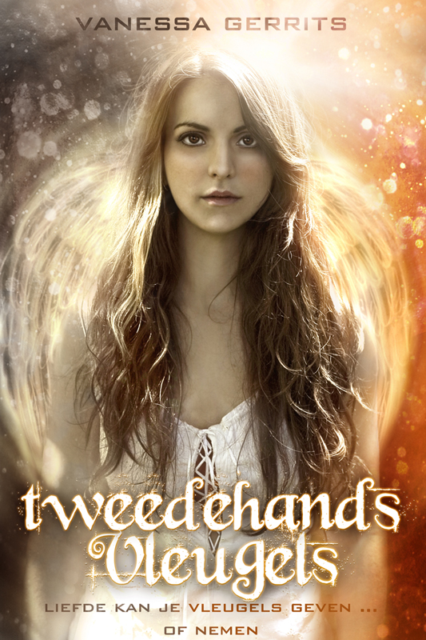

Tweedehands vleugels

“Liefde kan je vleugels geven ... of nemen.
Max heeft nieuwe vleugels nodig. En als Kraai – een wezen dat deels mens, deels monster en deels machine is – kan dat alleen maar door ze te stelen van een ander gevleugeld wezen.
Een Beschermengel bijvoorbeeld.
Iemand zoals Lucy.
Lucy verliest alles met haar vleugels: haar vrijheid, haar carrière en mogelijk zelfs de ziel van haar Bestemmeling. Maar één veer blijkt genoeg om haar leven terug in handen te krijgen ...
Elk met een verborgen agenda, sluiten de Engel en de Kraai een ongewone alliantie. Er staan levens, harten en vleugels op het spel.
Maar wat win je als je verliest? En is het het waard?”
Tweedehands Vleugels is een romantisch Young Adult-verhaal dat zich afspeelt op Nieuw-Anvers, een fictief eiland waar Engelen en Kraaien over het luchtruim heersen. Fantasy, steampunk en een (on)mogelijke liefde vloeien samen dit eerste deel van de Vleugels Trilogie door Vanessa Gerrits.
Wist je dat
- .. het vervolg op Tweedehands Vleugels ‘Zilveren Vleugels’ zal heten? De titel van deel drie houden we nog even geheim :-)
- ... beide hoofdpersonages afwisselend aan het woord komen? Net zoals in de Angel-trilogie van L.A. Weatherly, The Scorpio Races van Maggie Stiefvater, de Matched-trilogie van Ally Condie ...
- .. alle Engelen twee voornamen hebben? Ze heten bijvoorbeeld Anna- Lucia, Maria-Clara, Joachim-Jeremiah, Laure-Anne, Sam-Michaël ... Gelukkig korten ze dat meestal af!
- .. hoofdpersonage Lucy 117 jaar oud is? Trek er 100 jaar van af en ze is net als jou.
- ... Max doet echter wat geheimzinnig over zijn leeftijd, dus daar hebben we het raden naar.
- ... de 3 steden die vermeld worden in het boek afgeleid zijn van echte Belgische steden? Nieuw-Anvers (=Antwerpen), Groot-Bruxelois (=Brussel) en Oud-Alost (=Aalst). Bedankt hoor, Captain Obvious!
- ... er in Tweedehands Vleugels een muzikale link met Twilight verscholen zit? Als je ‘m weet te vinden, hoor ik het graag in het gastenboek ;-) Moeilijkheidsniveau: Twihard!